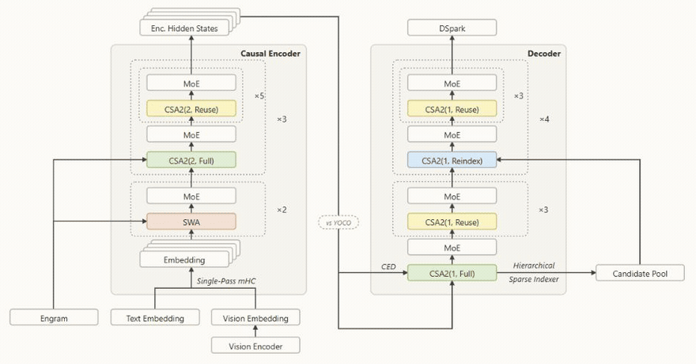
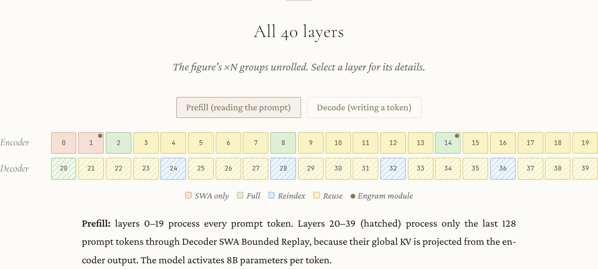
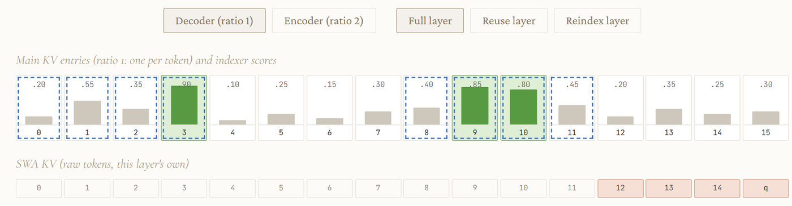

这是一份交互式的架构解读：把DeepSeek最新技术报告里的V4.1-Flash拆开看。它把三种注意力模式、编码器-解码器分工、以及Engram条件记忆都做成了可以逐层点击的图，这里整理成文字版。
一句话概括它的设计：40层里前20层当编码器负责读提示词、后20层当解码器负责写token，两层之间通过投影共享全局KV；配合纯CSA2的跨层复用，全局KV cache压到890字节/token。
这是DeepSeek在最新技术报告里提出的新架构。它是一个多模态的专家混合（MoE）Transformer：输入图像与文本，自回归地生成文本；40个因果层被组织成20层因果编码器加20层解码器。逐层看，前两层编码器使用滑动窗口注意力（SWA），其余层使用压缩稀疏注意力CSA2，其中括号里的两个参数分别指定压缩比与模式；模型还使用了单遍mHC、Engram、DSpark与分层稀疏索引器。

两个堆栈都是因果的：每一层只关注更早的token。这里的不对称在于「各自产出什么」，而不是「能看到哪个方向」。下面20层产生H(L/2)，上面20层从它那里取全局KV，而不是自己计算；生成的token会穿过两半，只有提示词token可以在下半部分之后就停下。
不对称体现在读取提示词的方式上：解码器的全局KV是从编码器的最终隐状态投影出来的，所以提示token只需要走20层编码器，外加一次128 token的解码器重放。这让模型在prefill阶段每token只激活8B参数、decode阶段激活16B，prefill计算量几乎减半。
CSA2的每一层处于三种模式之一，它们决定KV与索引从哪来：
任何模式下，每一层仍会计算自己的main Q与SWA KV。实际的排布是：编码器为SWA、SWA，接着是三组「Full + 5个Reuse」，没有Reindex；解码器是一个Full加3个Reuse，随后是四组「Reindex + 3个Reuse」。报告给出两个理由：共享KV减少缓存存储，复用Top-K避免索引器计算。V4.1还去掉了V4的CSA加HCA混合架构，改为纯CSA2。
| 模式 | Main KV / indexer K | Top-K索引 |
|---|---|---|
| Full | 自己计算 | 重新算 |
| Reindex | 复用 | 用自己的indexer Q，重算Top-K |
| Reuse | 复用 | 复用 |
报告引入了Engram，也就是此前工作中提出的条件记忆模块，用来把「记忆」与「计算」解耦。需要说明的是，报告并没有说Engram曾出现在更早的模型里又被移除。
Engram把最近的2-gram、3-gram与4-gram哈希进大型表（196B参数，分两个模块，位于第1层与第14层），并把检索到的嵌入以门控方式注入网络。由于寻址只依赖输入的token，这些查表可以提前从主机内存预取。
MoE：每个token使用384个路由专家中的6个，外加1个共享专家。稀疏注意力：每个query读取自己的Top-512个main-KV条目，加上128 token的SWA窗口，而不是读取整个上下文。CSA2复用：只有4层存储全局KV，38个CSA2层中有8层运行来自报告4.2.1节的索引器。分层索引器：后续解码器的索引器最多为16,384个候选打分，无论上下文多长。Engram则通过哈希查表把记忆与计算解耦；CED让提示词token跳过解码器的完整前向。
把架构图里那些「×N」的层组展开之后，可以用Prefill（读提示词）与Decode（写一个token）两种模式逐层查看。编码器是第0到19层，解码器是第20到39层，每层标注为SWA only、Full、Reindex、Reuse，或作为Engram模块。

在Prefill模式下：第0到19层处理每一个提示token；第20到39层（图中以斜线标出）只通过Decoder SWA Bounded Replay处理最后128个提示token，因为它们的全局KV是从编码器输出投影而来的。这一模式下每token激活8B参数。
用一个16 token的玩具例子来说明：query位于第15个位置。为了把一切塞进屏幕，尺寸被缩小了：用Top-3代替512，用4 token的SWA窗口代替128，用大小为2的块代替8，用4个块的候选池代替最多2,048个；其中的分数都是编造的示意值。
以第20层（Full）为例：索引器为全部16个可见位置打分，并保留Top-3，也就是位置3、9、10；它同时按块内最佳位置给大小为2的块打分，保留最好的4个块，于是候选池是 {0–3, 8–11}。query最终关注的是它选中的3个条目，加上自己的SWA窗口，也就是位置12到15。

图中颜色约定：绿色表示被Full挑中，黄色表示复用的索引，蓝色表示被Reindex挑中，虚线框表示候选池，斜线表示未被打分。
把关键规格汇总起来：
来源说明：架构解读基于DeepSeek-V4.1-Flash技术报告，各面板都标注了对应的报告章节；标注为「推导」的数值是对报告数字做的简单算术；玩具示例中的场景与分数属于示意；与YOCO的对比使用了YOCO的摘要（arXiv:2405.05254）。
| 项目 | 数值 |
|---|---|
| 主干参数 | 552B |
| Engram参数 | 196B |
| 每token激活 | prefill 8B、decode 16B |
| 上下文 | 最长100万token |
| 隐藏维d | 5,120 |
| 全局KV cache（HBM） | 890字节/token，约为V4-Flash（3,514）的1/4 |
| 持久KV cache | 约V4-Flash的1/8 |
| 预训练数据 | 45T多模态token |
参考：https://www.k-a.in/deepseek-v4-1-flash.html